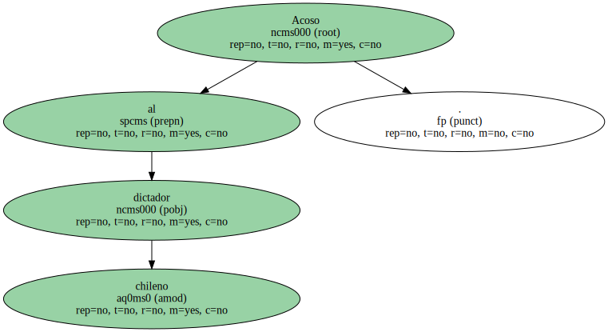

Acoso al dictador chileno.
El titular de Exteriores de Chile inicia sin esperanzas su mediación en Madrid.
Enfoca su visita como un intercambio de información sobre el contencioso.
El presidente reitera que se ajustará a las decisiones de los.

El ministro de Exteriores de Chile, José Miguel Insulza, que hoy se entrevistará con José María Aznar y con su homólogo, Abel Matutes, sólo aspira a que las autoridades españolas comprendan su posición y considera que la justicia española no puede ser imparcial en el caso Pinochet.
Insulza enfoca su visita a Madrid como un intercambio de información sobre el contencioso jurídico-político que afecta al dictador.
En sus primeras declaraciones en Madrid, el ministro de Exteriores chileno expresó su convencimiento de que el ambiente político en España "no es favorable" a Pinochet, lo que, en su opinión, puede condicionar la decisión judicial, a pesar de la "voluntad de imparcialidad".
Ese ambiente lleva a las autoridades españolas a ser prudentes con la decisión de la justicia en el país.
Ayer mismo, José María Aznar, al terminar la cumbre hispano-lusa en Vilamoura afirmó: "Cuando el Gobierno británico tome su decisión, la posición del Ejecutivo español seguirá siendo la misma, la de ajustarse a lo que determine la justicia española".
Explicaciones oficiales.

"No tengo ninguna expectativa sobre este viaje. Más bien es una visita de información", afirmó Insulza minutos después de llegar a Madrid.
Como ha hecho durante su visita a Londres, el ministro de Exteriores chileno explicará a los representantes de instituciones y partidos el deseo del Gobierno de Eduardo Frei de que Pinochet pueda volver a Chile.
No obstante, desmintió que exista un pacto secreto entre las autoridades británicas y chilenas para evitar que el dictador sea extraditado a España.
para el jefe de la diplomacia chilena lo importante es que su país no sea humillado en este conflicto y pueda hacer "justicia y verdad", por lo que puso el acento en el derecho de Chile a defenderse como Estado soberano frente a otros estados.
En su opinión, los elementos políticos no pueden ser dejados de lado, ni deben estar reñidos con los aspectos judiciales.
Según Insulza, Chile es un Estado democrático con un proceso de transición que dura ocho años y que "ha sido escrupuloso con el respeto a los derechos humanos y a la ley".
Pero el abogado Eduardo Contreras, que dirige la acusación en la primera querella contra el dictador en Chile, acusó el diplomático chileno de "mentir" a Madrid y a Londres cuando asegura que si el dictador regresa se aceleraría el proceso judicial en marcha.
En la apretada agenda de Insulza figuran algunos encuentros destacables, como con el presidente de la CEOE, José María Cuevas, que tienen por objeto repasar las relaciones comerciales entre ambos países.
Sin embargo, tras reunirse ayer con el ministro de Defensa, Eduardo Serra, fuentes de este departamento aseguraron que "el acuerdo sobre la venta de dos submarinos a Chile no ha sido el objeto de la conversación".
Insulza descartó que la ruptura de relaciones o las sanciones económicas sean el camino adecuado.
El último encuentro de ayer de Insulza, acompañado del embajador de Chile en Madrid, Sergio Pizarro, tuvo lugar en la sede del PSOE con Joaquín Almunia y Josep Borrell.
Ambos expusieron al canciller chileno que los socialistas españoles también apuestan por la vía judicial y no ponen reparos a que Pinochet sea juzgado en su país.
Los dirigentes del PSOE están convencidos de que la situación judicial del dictador no pone en peligro la vía democrática chilena.